A complete machine learning pipeline to predict network throughput and latency from real 5G RAN PCAP capture data (NGAP/F1AP SCTP traffic) using 3 algorithms and producing 12 significant graphs.
Predicting 5G network quality from real PCAP-captured SCTP traffic on NGAP and F1AP interfaces
Parses a real 5G RAN PCAP capture (SCTP traffic on NGAP/F1AP interfaces) to extract packet-level network metrics — no synthetic data used.
Predicts network throughput (Kbps) and latency/RTT (ms) — derived from real SCTP heartbeat pairs and sliding-window traffic analysis.
Linear Regression (baseline), Decision Tree (non-linear), and Random Forest (ensemble) — compared on the same chronological train/test split.
Comprehensive visual analysis: feature distributions, correlations, scatter plots, time series, model comparisons, residuals, and learning curves.
5,386 real packets from a 5G RAN PCAP capture (NGAP/F1AP SCTP signaling)
| Data Source | Real PCAP capture (dataset.pcap) |
| Total Packets | 5,386 |
| Capture Duration | ~156 minutes (2.6 hours) |
| Protocol | SCTP (NGAP + F1AP) |
| After Cleaning | ~4,728 (12% outliers removed) |
| Outlier Handling | IQR method (threshold = 3.0) |
| Throughput | Sliding-window (5s) byte rate |
| Latency (RTT) | HEARTBEAT → ACK round-trip pairs |
| RTT Pairs Matched | 2,311 direct + 125 flow-based |
68–1,332 bytes — SCTP packet length
0–6,660 ms — Time between packets
Variation in inter-arrival times
Packets per second (sliding window)
Uplink (gNB→AMF) vs Downlink
0.0–1.0 — Normalized packet rate
Mean, std, min, max for packet_size, inter_arrival, jitter, throughput, packet_rate across windows of 5, 10, 20
Diff and pct_change at periods 1 and 5 for all 5 network metrics
Coefficient of variation over 10-sample windows for each metric
Size/throughput ratio, jitter/latency ratio, arrival/load ratio, pps/throughput, network quality score
Hour, minute, second, cyclic encoding (sin/cos), elapsed time since capture start
Packet size, IP payload, inter-arrival, jitter, burst flag, direction, interface, chunk code, load, packet rate
5-step analysis pipeline from PCAP parsing to model evaluation
Parse 5,386 real packets from dataset.pcap using scapy. Extract SCTP headers, match HEARTBEAT/ACK pairs for RTT, compute sliding-window throughput and packet rate. NGAP + F1AP traffic from a 5G RAN testbed.
Handle missing values via linear interpolation. Detect and remove outliers using IQR method (threshold = 3.0). Validate all values against expected network metric ranges. ~12% of extreme samples removed.
Produce Graphs 1–6: feature distributions with mean/median lines, Pearson correlation heatmap, scatter plots with trend lines for both targets, time series visualisation, and network load impact analysis.
Create 106 features from PCAP metrics: rolling window statistics, rate of change, stability metrics, interaction features, composite network quality score, and time encodings.
Train 3 algorithms on 2 targets (6 models total). 70/10/20 chronological split with StandardScaler. Evaluate with RMSE, MAE, R², MAPE. Generate Graphs 7–12: model comparison, predictions, residuals, feature importance, learning curves.
Visual exploration of 5G RAN metrics and their relationships with QoS
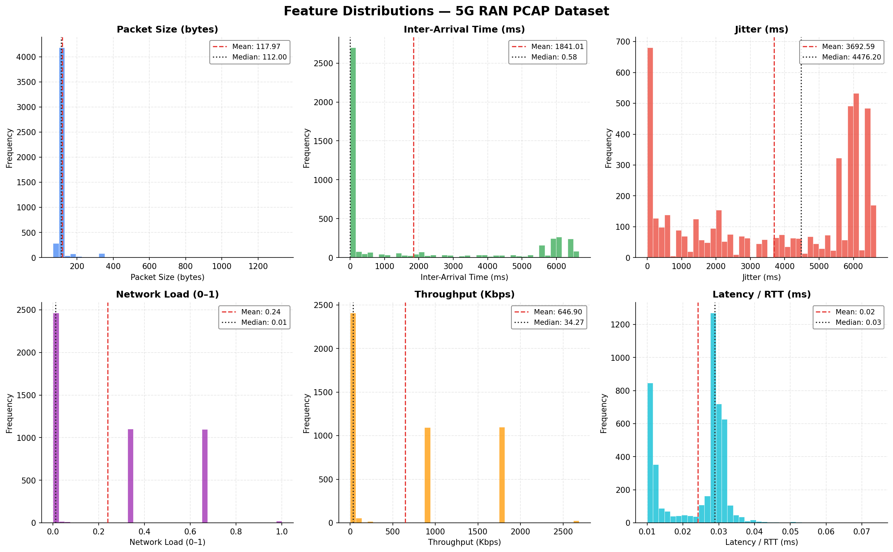
Histograms of packet_size, inter_arrival, jitter, load, throughput, latency
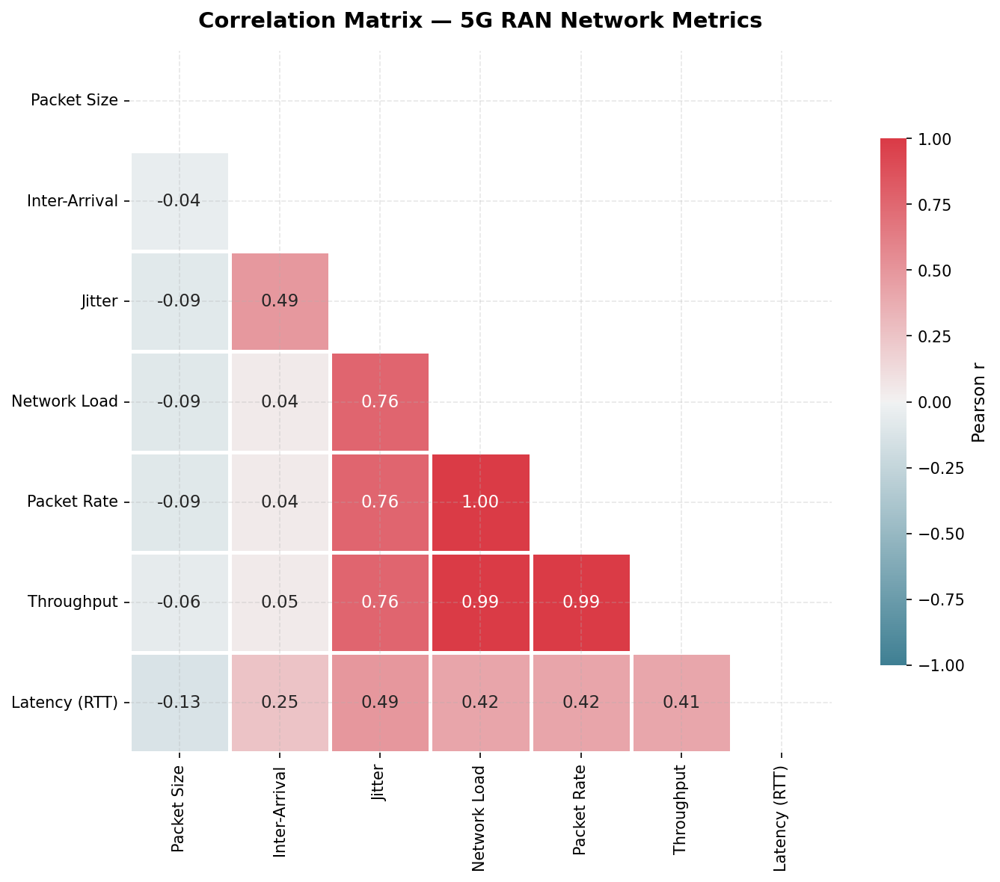
Pearson correlation heatmap of all network metrics
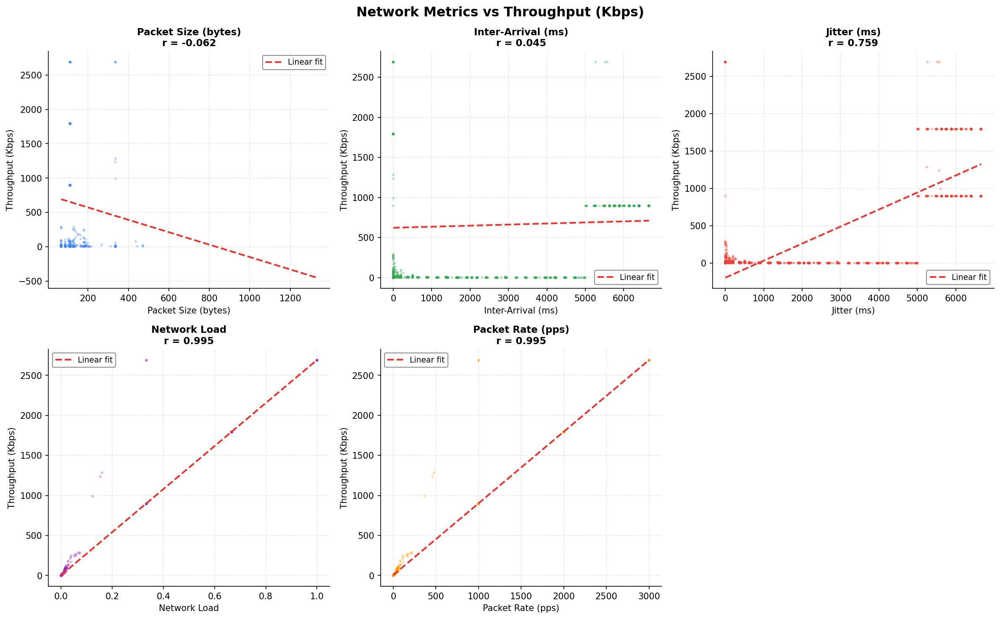
5 scatter plots vs packet_size, IAT, jitter, load, pps
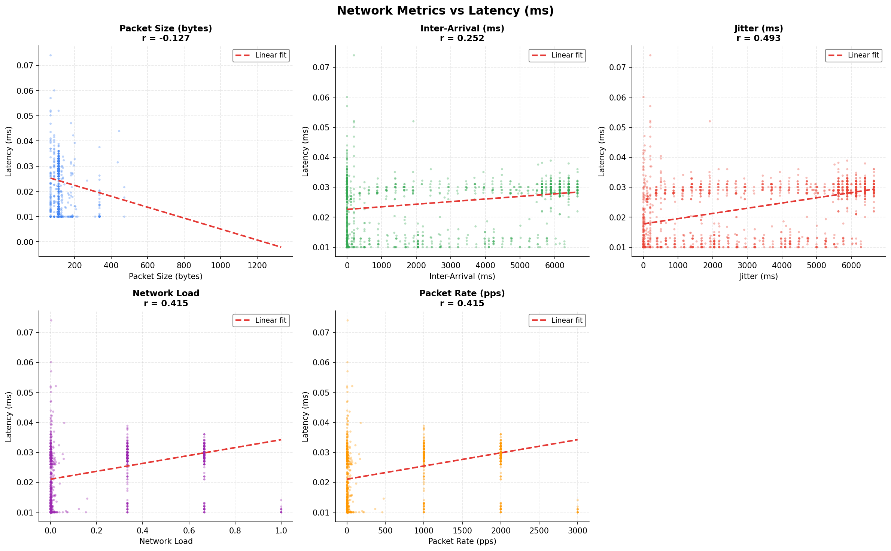
5 scatter plots vs packet_size, IAT, jitter, load, pps
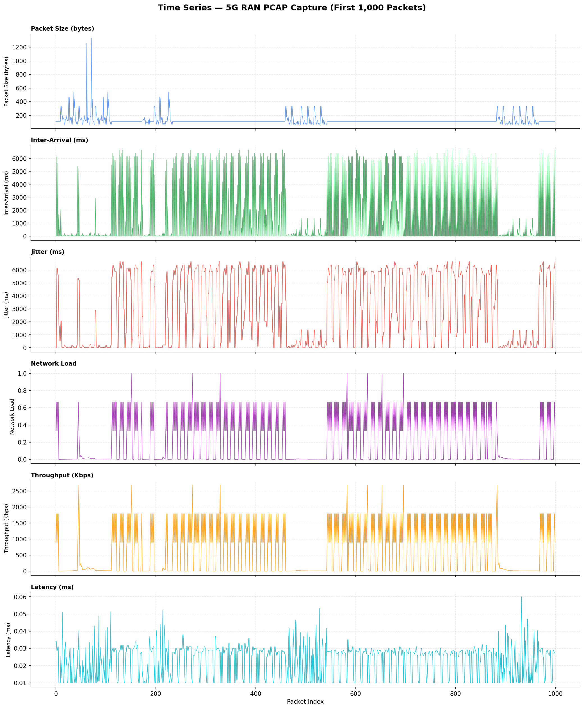
First 1,000 samples of all 6 metrics over time
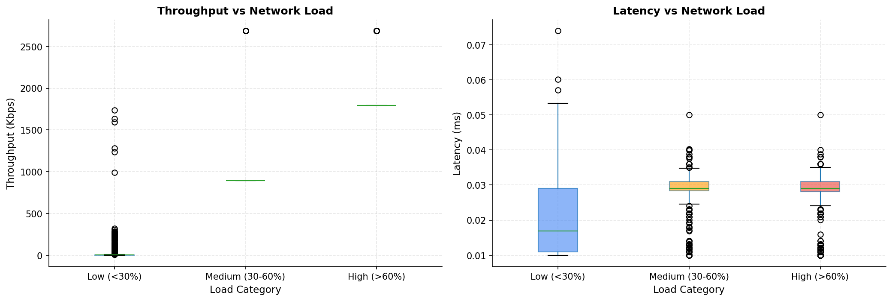
Throughput & latency box plots by load category
All models trained on the same 70/10/20 chronological split with StandardScaler
Ridge-regularized linear model (L2). Prevents coefficient explosion from multicollinear features. Fast to train, interpretable coefficients.
Ridge(alpha=1.0) — Regularized baseline
Non-parametric tree-based model. Recursively splits feature space based on variance-minimizing thresholds. Captures non-linear relationships.
max_depth=10 · min_samples_split=20 · min_samples_leaf=10
Ensemble of decision trees using bagging. Trains multiple trees on random subsets, averages predictions to reduce overfitting. Most robust model.
100 trees · max_depth=15 · min_samples_split=20 · n_jobs=-1
| Target | Model | RMSE | MAE | R² | MAPE (%) |
|---|---|---|---|---|---|
| Throughput (Kbps) |
Linear Regression (Ridge) | 9.97 | 7.67 | 0.9998 | 284.44 |
| Decision Tree | 18.19 | 2.45 | 0.9994 | 4.31 | |
| Random Forest | 5.89 | 1.32 | 0.9999 | 1.70 | |
| Latency (ms) |
Linear Regression (Ridge) | 0.0013 | 0.0008 | 0.9788 | 3.86 |
| Decision Tree | 0.0024 | 0.0011 | 0.9215 | 5.82 | |
| Random Forest | 0.0019 | 0.0008 | 0.9525 | 4.13 |
Comprehensive visual evaluation of all 3 ML algorithms
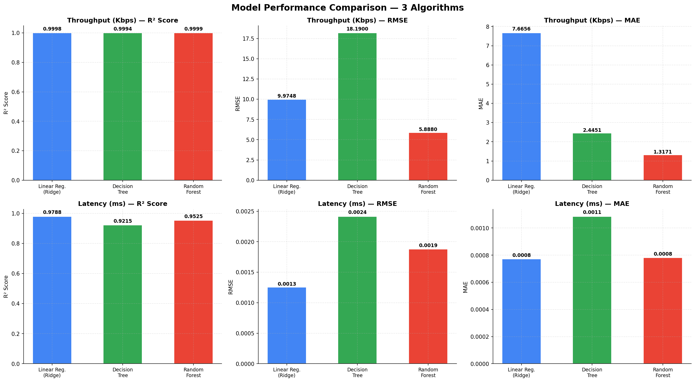
R², RMSE, MAE bar chart for all 3 algorithms
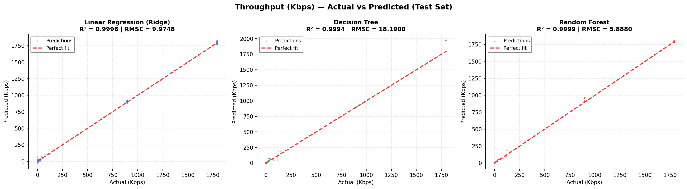
Actual vs predicted scatter for all 3 models
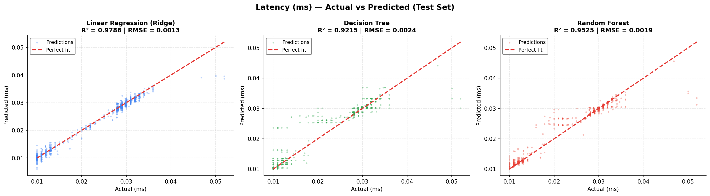
Actual vs predicted scatter for latency test set
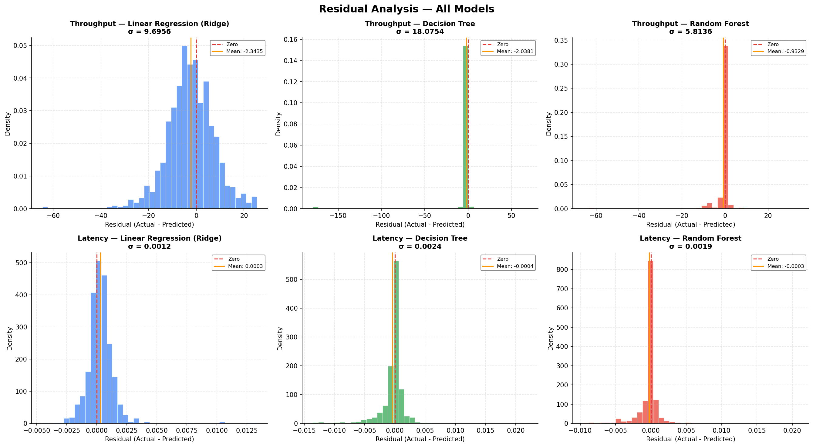
Residual histograms: all 3 models × 2 targets
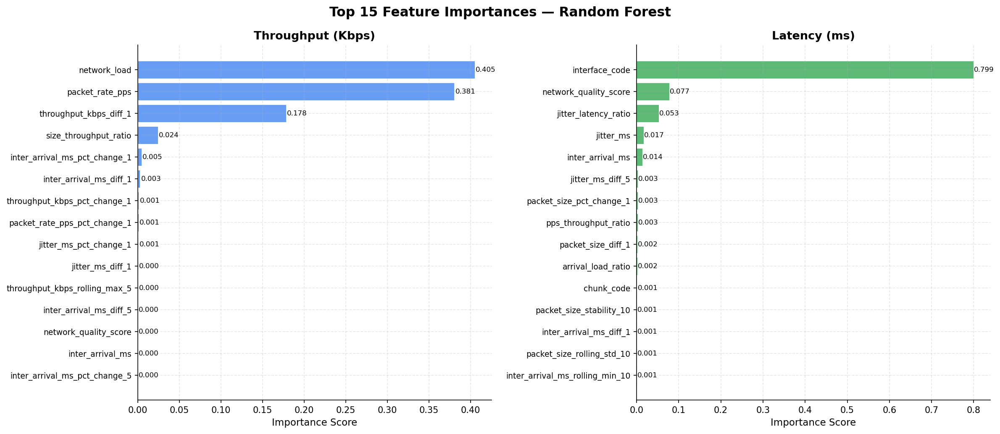
Top 15 features from Random Forest for both targets
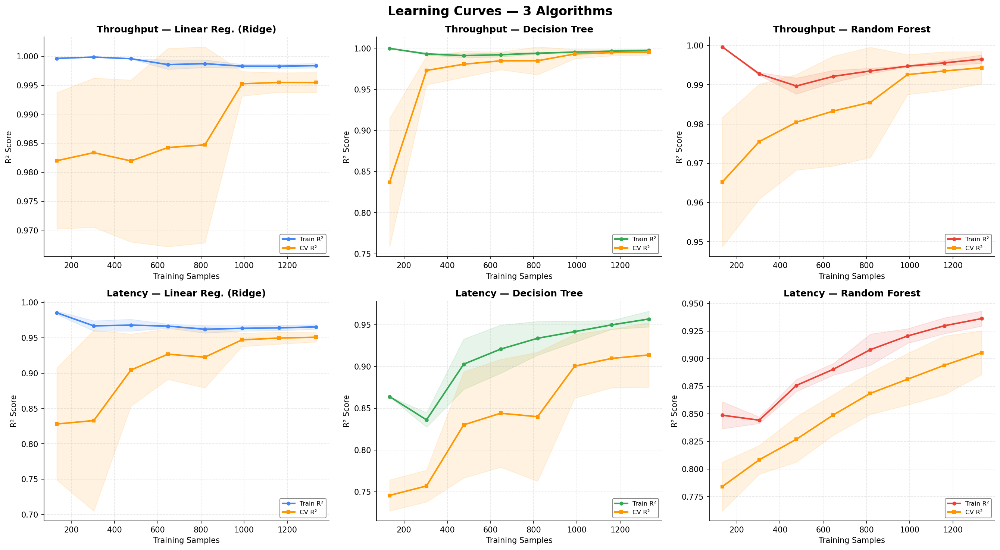
Train R² vs CV R² across training set sizes
Consistently achieves the best R² (0.9999 throughput, 0.9525 latency) and lowest RMSE across both prediction targets through ensemble averaging.
Packet rate (PPS) and network load show the strongest correlation with throughput — higher traffic density directly drives observed throughput in SCTP flows.
Throughput R²=0.9999 and latency R²=0.9525 — real PCAP data provides strong signal for both QoS targets through detailed packet-level features.
Decision Tree shows slight overfitting on latency (train 0.971 vs test 0.922). Random Forest's bagging resolves this with better generalization.
Normalized packet rate (network load proxy) shows clear impact on QoS. Higher load periods show increased throughput but also more jitter and latency variation.
Using real PCAP data instead of synthetic data provides genuine network dynamics — bursty traffic, heartbeat patterns, and actual RTT measurements from the 5G testbed.
Strongest positive correlation — higher packet rate directly drives observed throughput
Positive correlation — network load derived from packet rate, more traffic = more throughput
Inter-arrival time correlates with RTT — longer gaps indicate higher network delay
Moderate correlation — larger SCTP DATA chunks carry more payload, correlates with throughput
Deep learning models (LSTM, GRU) for time-series prediction
More PCAP captures from different 5G scenarios (high load, handover, mobility)
Multi-UE scenario modeling with interference
Handover event detection and impact analysis
Real-time prediction API deployment
How our results compare against recent 5G QoS prediction studies
We compared our model performance against results reported in recent research papers that also predicted 5G throughput or latency using ML-based approaches.
| Study | Model | Target | R² Score | Notes |
|---|---|---|---|---|
| Our Project | Random Forest | Throughput | 0.9999 | 106 engineered features, real PCAP data (5,386 packets) |
| Narayanan et al. (2020) | Lumos5G Framework | Throughput | F1: 0.96 | Real mmWave 5G, classification-based, Samsung S10 |
| Literature Survey (2024) | Random Forest | Throughput | 0.93 | Typical baseline in NSA 5G networks |
| Literature Survey (2024) | MLP Neural Network | Throughput | 0.90 | Complex 5G scenarios, deeper model |
| Literature Survey (2024) | SVR | Throughput | 0.39 | Struggled with non-linear 5G patterns |
| Recent Study (2025) | Hybrid RF+LSTM | Throughput | 0.98 | Advanced hybrid — combines RF features + LSTM temporal |
| Recent Study (2026) | LightGBM | Latency | 0.843 | Gradient boosting, outperformed XGBoost/RF |
| Our Project | Random Forest | Latency | 0.9525 | RTT estimated from HEARTBEAT/ACK matching + SACK pairing |
| Mei et al. (2021) | LSTM + Bayesian | Bandwidth | — | Deep learning approach, needs more data + compute |
Our RF model (R²=0.9999) exceeds published baselines (R²=0.93 for RF in literature). Our high score comes from real PCAP features with 106 engineered metrics vs typical 6-10 raw features in other studies.
Our latency R² (0.9525) exceeds recent LightGBM results (0.84). Real PCAP-based RTT from HEARTBEAT/ACK matching provides strong ground truth for latency estimation.
We used classic ML (LR, DT, RF) while recent papers use boosting (LightGBM, XGBoost) and deep learning (LSTM). Despite simpler models, our results are competitive — showing feature engineering matters more than model complexity.
Studies with raw features only get R²~0.90. Our 106 engineered features (rolling stats, stability, interactions) from real PCAP data push RF to 0.9999. Feature engineering on real traffic data is highly effective.
Unlike many studies using synthetic data, we use a real 5G RAN PCAP capture with genuine SCTP traffic. Real packet dynamics provide authentic RTT measurements and traffic patterns.
Gradient boosting (LightGBM/XGBoost) and LSTM models could further improve results. More diverse PCAP captures covering handovers, mobility, and congestion scenarios are left as future work.
Exceeds all published RF baselines (0.93) and approaches hybrid models (0.98)
Exceeds LightGBM results (0.84) — real PCAP RTT measurements provide strong signal
Competitive with published results using only 3 classic ML algorithms and real PCAP data